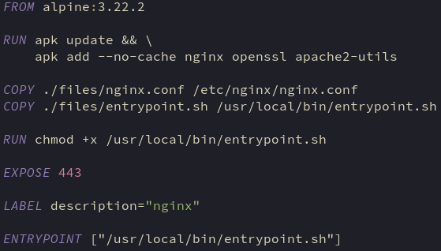

<h1>nginx</h1>
<h2>dockerfile</h2>
<p></p>
<h3>RUN</h3>
<ul>
<li>Update&nbsp;package list&nbsp;and install required packages</li>
<li>Openssl&nbsp;installed&nbsp;to create ssl cert and pub key</li>
<li>apache2-utils for htpasswd utility. Used to create password file for netdata (bonus)</li>
</ul>
<p>&nbsp;</p>
<h3>COPY ./files/nginx.conf /etc/nginx/nginx.conf</h3>
<ul>
<li>Copy nginx config to container, overwriting the default config</li>
</ul>
<p>&nbsp;</p>
<h3>COPY ./files/entrypoint.sh /usr/local/bin/setup/entrypoint.sh</h3>
<ul>
<li>Copy&nbsp;entrpoint script to container</li>
</ul>
<p>&nbsp;</p>
<h3>RUN&nbsp;chmod +x /usr/local/bin/entrypoint</h3>
<ul>
<li>
<p>Make entrypoint script executable</p>
</li>
</ul>
<p>&nbsp;</p>
<h3>&nbsp;EXPOSE 443</h3>
<ul>
<li>
<p>Port used for external communication</p>
</li>
</ul>
<p>&nbsp;</p>
<h3>&nbsp;ENTRYPOINT [&ldquo;/usr/local/bin/entrypoint.sh&rdquo;]</h3>
<ul>
<li>Script to be run whenever the container is started</li>
</ul>
<p>&nbsp;</p>
<p><strong>Return:</strong> <a title="Go to nginx homepage" href="index.html">nginx</a>&nbsp; <a title="Go to inception homepage" href="../index.html">home</a></p>
